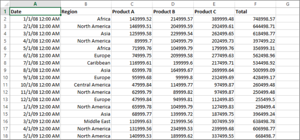

Étudiant en Data Science
Bonjour, je suis Youssef et je vous souhaite la bienvenue sur mon portfolio ! je suis actuellement étudiant en BUT Sciences des Données à l’Université Paris Cité, je suis à la recherche d’une alternance de 2 ans dans le domaine de la data. J'aime explorer, analyser et transformer les données en solutions concrètes grâce à des outils comme Python, SQL, Power BI, Excel, etc.
Mes projets
Enquête sur le pôle culture
Création de questionnaire, nettoyage et analyse Excel.

Analyse pour une boutique de location
SQL, TCD Excel, tendances business.

Traitement de fichiers texte
Python pour restructurer des fichiers textes.
Enquête sur le pôle culture
Enquête : Conception d’un questionnaire et diffusion via la messagerie universitaire, complétée par une collecte physique sur les campus.
Traitement des données :
- Nettoyage des données (suppression de doublons, vérification de la cohérence).
- Analyses statistiques (univariées pour identifier les tendances générales, bivariées pour croiser les variables).
- Extraction de KPIs clés :
- Taux de participation
- Niveau de satisfaction globale
- Coût moyen par étudiant pour les activités culturelles
Analyse pour une boutique de location
- Nettoyage et structuration des données dans Excel
- Suivi de 5 KPI : CA, répartition films, fréquence location, volume transactions, taux de réachat
- Requêtes SQL
- Travail en équipe de 5
Traitement de fichiers texte
- Utilisation de Python pour lire, nettoyer et structurer des fichiers texte bruts
- Organisation finale dans un Excel pour analyse
Compétences
Outils
Tableau
Excel
Power BI
Access
Programmation
SQL
Python
SAS
R
VBA
DAX
Power Query
Cloud
Microsoft Azure